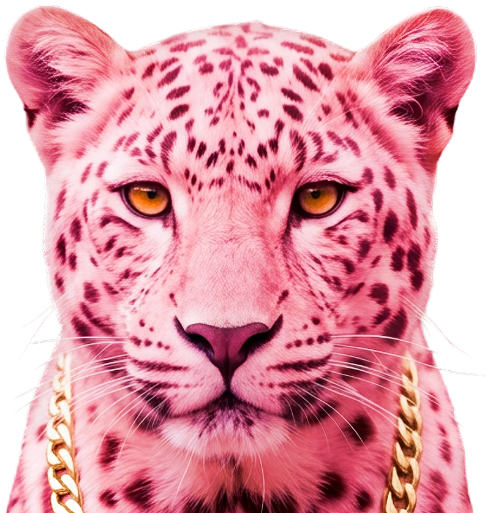

← Вернуться в портфолио
Кейс #12 • Карточка товара & Воронка Ozon
АНТИСТАТИЧЕСКАЯ
АНТИСТАТИЧЕСКАЯ
ПЕРЧАТКА ОТ ШЕРСТИ
Разработка конверсионной воронки из 5 слайдов и 3 концептов обложки для Ozon. Отстройка от конкурентов через розовый цветовой код, инверсию композиции по Z-паттерну и 100% сохранение реальной геометрии и фактуры товара (Lock-Block).



Сотрудничество
НУЖНА ПРОДАЮЩАЯ КАРТОЧКА И ВОРОНКА?
Упакую ваш товар в конверсионную визуальную систему с отстройкой от конкурентов, которая выделит карточку в выдаче Ozon и Wildberries.
Обсудить проект →